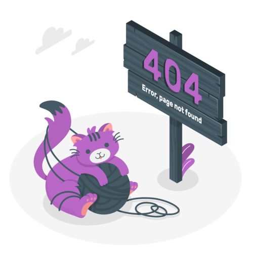

<ion-header>
  <ion-toolbar>
    <ion-title>Page Not Found</ion-title>
  </ion-toolbar>
</ion-header>

<ion-content>
  <div class="container">
    
    <h1>404</h1>
    <p>Maaf, halaman yang kamu cari tidak ditemukan.</p>
    <ion-button href="/home" class="btn-purple">
      <ion-icon slot="start" name="arrow-back" class="custom-icon"></ion-icon>
      Kembali ke Beranda
    </ion-button>
  </div>
</ion-content>